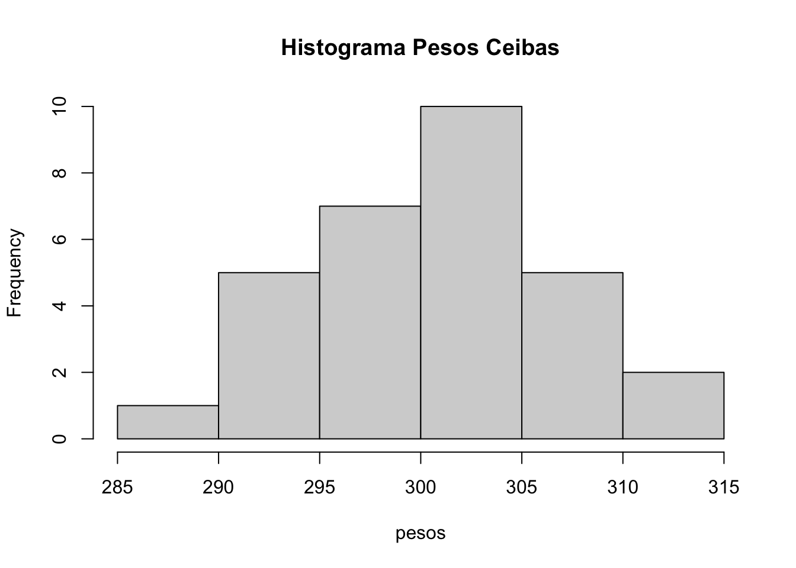
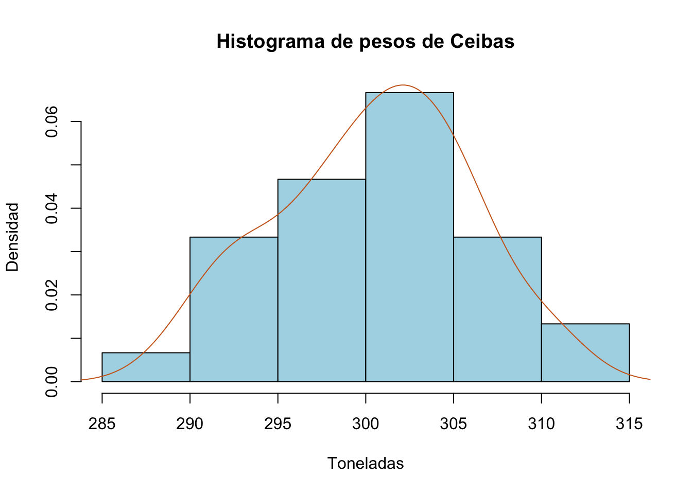

pesos=c(303.37, 301.02, 292.24, 300.30, 299.94, 291.24, 297.93, 306.81, 303.49, 302.12,
292.82, 297.89, 296.84, 301.09, 303.95, 289.44, 296.99, 310.30, 296.80, 302.50,
305.99, 301.16, 305.53, 305.02, 303.21, 310.32, 294.25, 299.62, 306.27, 293.37)
hist(pesos,main = "Histograma Pesos Ceibas")
###
hist(pesos,freq=FALSE,prob=TRUE,col = "lightblue",main='Histograma de pesos de Ceibas',xlab='Toneladas',ylab='Densidad')
lines(density(pesos),col = "chocolate3")